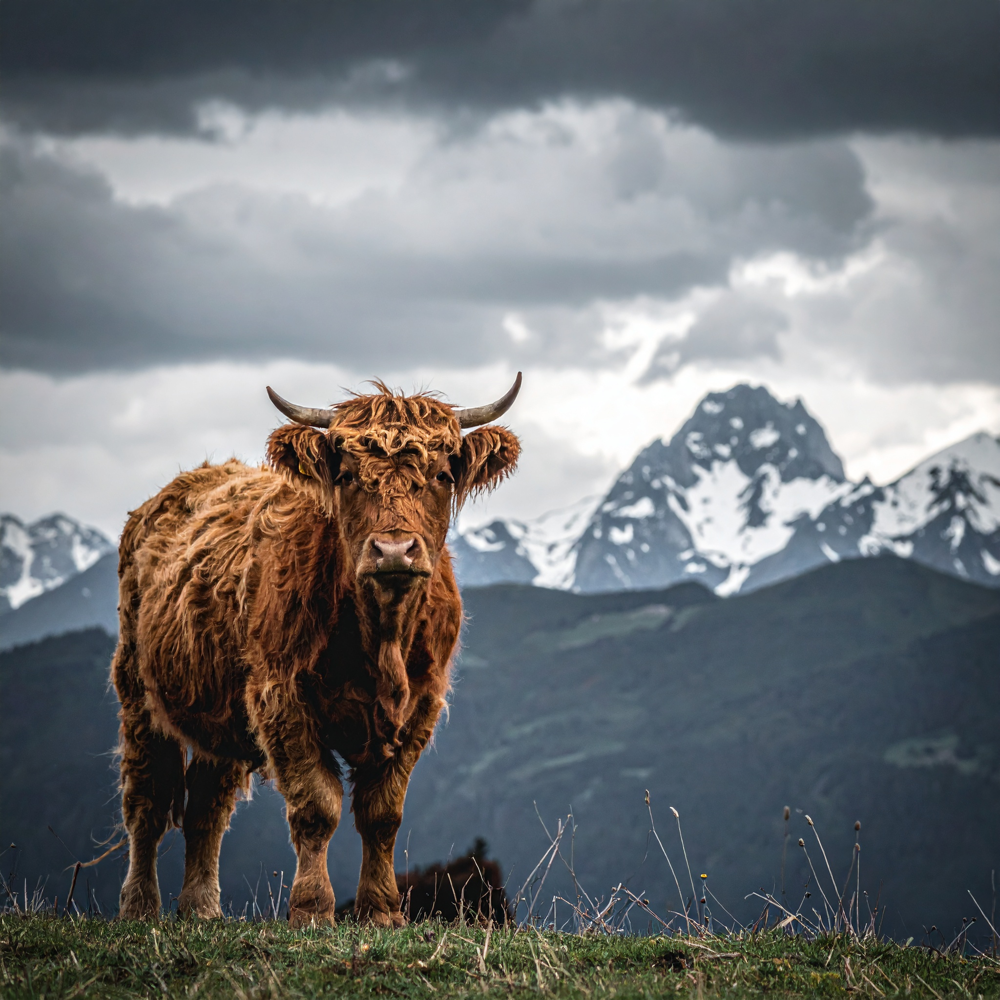
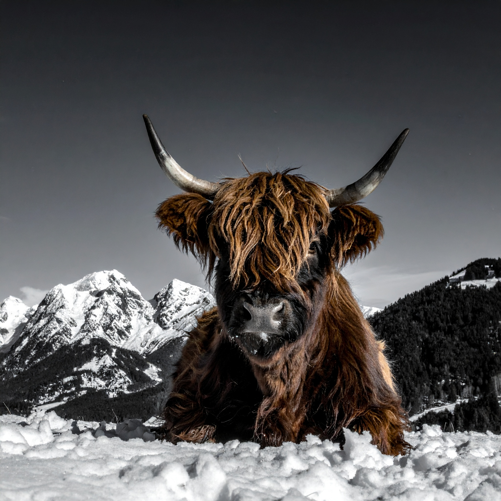
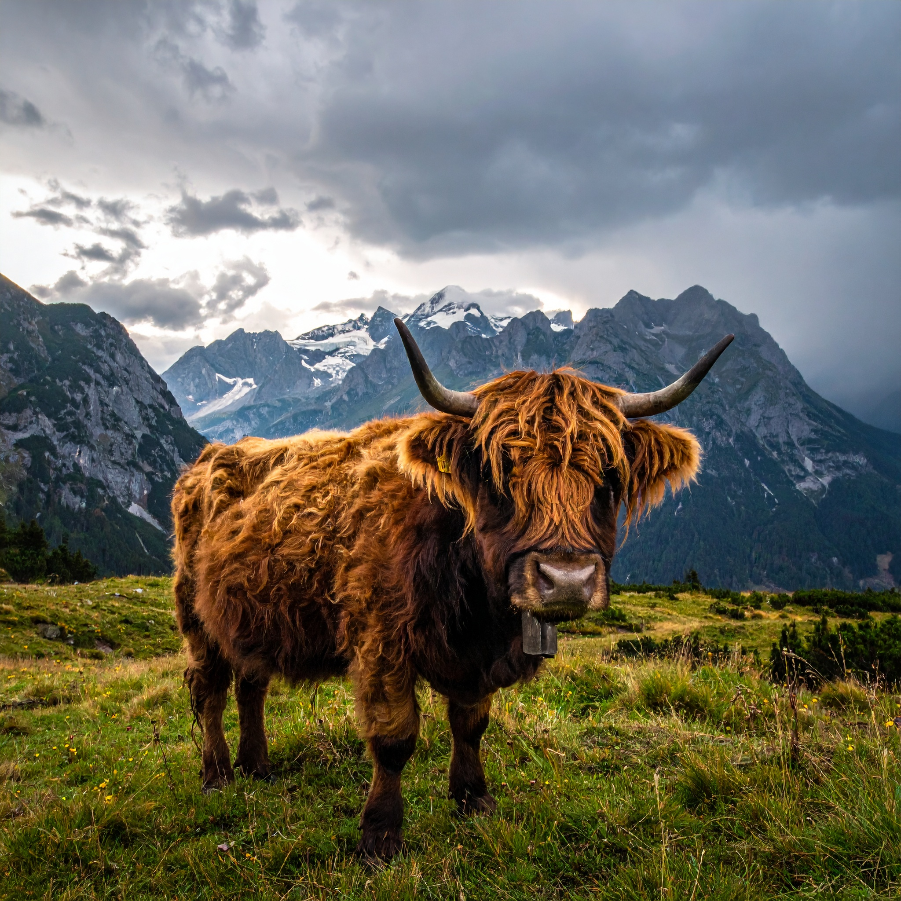

Naše prostředí


Před zařazením do chovu každý jedinec prochází:
Cílem našeho chovu je zachovat tradiční linii skotského skotu a nabídnout zvířata, která vynikají zdravím, dlouhověkostí a reprezentativním vzhledem.

Narození: 16.10.2018
Energický a společenský, velmi učenlivý a vyrovnaný.
Úspěchy: 1. místo – Národní výstava masného skotu 2023
Rodiče: Hildegarda of Glenwood × Eustác z Alpské vysočiny

Narození: 8.7.2015
Povaha: Přítulná, sociální a velmi hravá.
Úspěchy: Šampion mladých býků 2022
Rodiče: Hector of Dunoon × Mhairi z Podkrkonoší

Datum narození: 12. 5. 2019
Povaha: Klidná, trpělivá a přátelská, vhodná i k práci s dětmi.
Úspěchy: 1. místo – Národní výstava masného skotu 2023
Rodiče: Angus of Glenwood × Fiona ze Skotské vysočiny